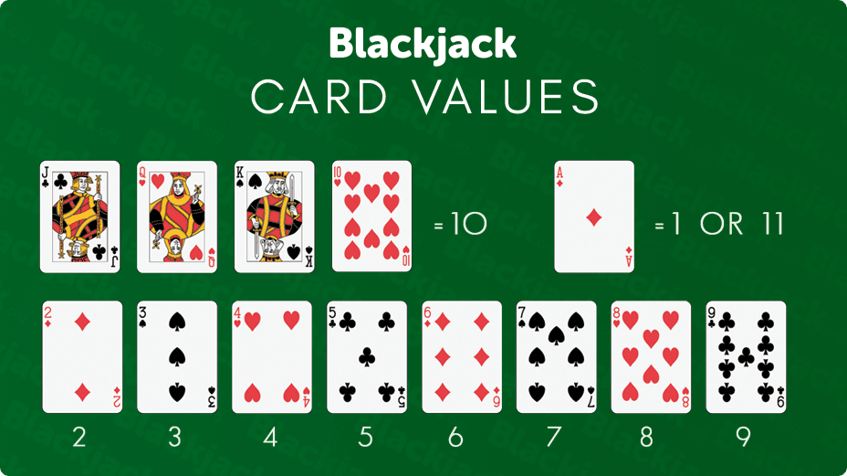

Introduction
Blackjack is a single-deck game where one or more players play against a dealer. It's simple: defeat the dealer's hand without going over 21. Each player plays only against the dealer—not the other players.
Queens, Jacks, and Kings are worth 10; number cards are worth face value; and Aces are worth either 1 or 11, whichever is more beneficial.
Blackjack is a game of decision-making—knowing when to hit, stand, double down, or split based on odds and the dealer's visible card.
Rules
Objective
Beat the dealer by having a hand total closer to 21 without going over (busting).
Card Values
Basic Gameplay and Terminology
- Place a Bet: All players place their bets before cards are dealt.
- Deal: Two cards go to each player and the dealer.
- Player’s Cards: Face-up. Dealer has one face-up and one face-down card.
Player Actions
- Hit: Draw another card.
- Stand: Keep your current hand.
- Double Down: Double your bet and take one final card.
- Split: If you have two of the same card, split them into two hands.
Dealer’s Turn
The dealer reveals their hidden card and hits until reaching 17 or more. In some casinos, the dealer must hit on a “soft 17.”
Winning
- You win if your hand is higher than the dealer's without busting.
- You win if the dealer busts and you don't.
- You lose if you bust, no matter the dealer’s hand.
- If tied, it’s a “push” and your bet is returned.
Examples
Example 1: Natural Blackjack
You: Ace ♠️ + King ♥️ → 21
Dealer: 10 ♣️ + 7 ♦️ → 17
You win outright with a Blackjack and are paid typically 3:2.
Example 2: Hitting or Standing
You: 10 ♥️ + 6 ♦️ → 16
Dealer reveals: 10 ♠️
It's not a good idea, but most fundamental strategies call for hitting since the dealer has a strong upcard and you will likely lose if they hit a stronger combination.
Example 3: Splitting
You: 8 ♥️ + 8 ♦️ → 16
Dealer shows: 6 ♠️
You split the 8s into two hands, hoping to have strong hands from each. This is the correct decision since the dealer shows a weak card.
Example 4: Double Down
You: 5 ♣️ + 6 ♦️ → 11
Dealer shows: 4 ♥️
You double down, bet more and receive one card. Luckily, you get a 10 to get to 21.
Tips
1. Know Basic Strategy
There is a mathematically established way of playing every conceivable hand based on your count and the dealer's upcard. Reading and following a basic strategy chart lowers the house edge.
2. Always Split Aces and Eights
Aces give you a good chance to get 21.
Eights split up a poor hand (16) into two potentially improved hands.
3. Never Split Tens or Fives
Fives make a good 10—better to double down.
Tens give you 20, a good hand not to break up.
4. Don't Take Insurance
If the dealer has an Ace, they will occasionally offer you "insurance." It's actually a side bet that the dealer has blackjack. It's against the odds for you, and everyone agrees that you don't want to take it.
5. Watch the Dealer's Upcard
When the dealer shows a 2–6, they will probably bust, so be careful.
When the dealer shows a 7–Ace, bet aggressively.
6. Master Bankroll Management
Risk only what you can lose. Set a budget and stick to it. Never chase losses.
7. Stay Cool and Steady
Blackjack is a game of runs. Stick with your strategy even in case of losses—it will show returns eventually.
With practice of the fundamentals and rehearsal of sound decision-making, blackjack is not luck—it is a skill game you can play and master. Play small, play responsibly, and have fun!